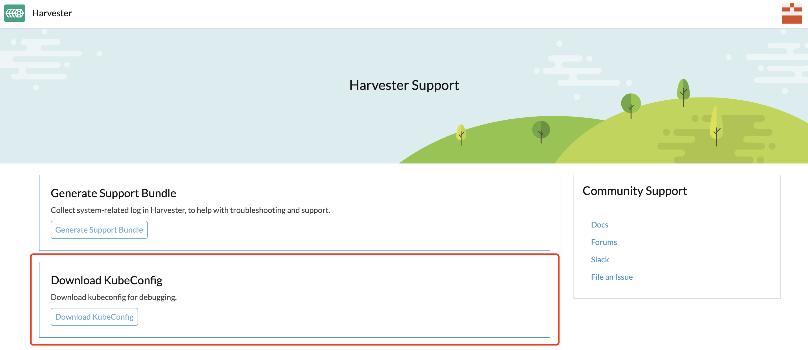

FAQ
Cette FAQ est un travail en cours conçu pour répondre aux questions que nos utilisateurs posent le plus souvent sur Harvester.
Quel est le nom d’utilisateur et le mot de passe par défaut du tableau de bord Harvester ?
username: admin
password: # you will be promoted to set the default password when logging in for the first timeComment puis-je accéder au fichier kubeconfig du cluster Harvester ?
Option 1. Vous pouvez télécharger le fichier kubeconfig depuis la page de support du tableau de bord Harvester.

Option 2. Vous pouvez obtenir le fichier kubeconfig depuis l’un des nœuds de gestion Harvester. Exemple :
$ sudo su
$ cat /etc/rancher/rke2/rke2.yamlComment installer le qemu-guest-agent d’une VM en cours d’exécution ?
# cloud-init will only be executed once, reboot it after add the cloud-init config with the following command.
$ cloud-init clean --logs --rebootComment puis-je réinitialiser le mot de passe administrateur ?
Dans le cas où vous oubliez le mot de passe administrateur, vous pouvez le réinitialiser via la ligne de commande. Connectez-vous en SSH à l’un des nœuds de gestion et exécutez la commande suivante :
# switch to root and run
$ kubectl -n cattle-system exec $(kubectl --kubeconfig $KUBECONFIG -n cattle-system get pods -l app=rancher --no-headers | head -1 | awk '{ print $1 }') -c rancher -- reset-password
New password for default administrator (user-xxxxx):
<new_password>J’ai ajouté un disque supplémentaire avec des partitions. Pourquoi n’est-il pas détecté ?
À partir de Harvester v1.0.2, nous ne supportons plus l’ajout de disques partitionnés supplémentaires, donc assurez-vous de supprimer toutes les partitions d’abord (par exemple, en utilisant fdisk).
Pourquoi certains pods Harvester deviennent-ils ErrImagePull/ImagePullBackOff ?
C’est probablement parce que votre cluster Harvester est isolé physiquement, et certaines images de conteneur préchargées manquent. Kubernetes dispose d’un mécanisme qui effectue un nettoyage des images encombrées. Lorsque la partition qui stocke les images de conteneur est remplie à plus de 85 %, kubelet essaie de supprimer les images en fonction de la dernière fois qu’elles ont été utilisées, en commençant par les plus anciennes, jusqu’à ce que l’occupation soit inférieure à 80 %. Ces chiffres (85 % et 80 %) sont des seuils par défaut Haut/Bas fournis avec Kubernetes.
Pour récupérer cet état, effectuez l’une des actions suivantes en fonction de la configuration du cluster :
-
Tirez les images manquantes de sources extérieures au cluster (si c’est un environnement isolé physiquement, vous devrez peut-être configurer un proxy HTTP au préalable).
-
Importez manuellement les images à partir de l’image ISO de Harvester.
Prenez v1.1.2 comme exemple, téléchargez l’image ISO de Harvester à partir de l’URL officielle. Ensuite, extrayez la liste des images de l’image ISO pour décider quelle archive d’image nous allons importer. Par exemple, nous voulons importer l’image de conteneur manquante
rancher/harvester-upgrade.$ curl -sfL https://releases.rancher.com/harvester/v1.1.2/harvester-v1.1.2-amd64.iso -o harvester.iso $ xorriso -osirrox on -indev harvester.iso -extract /bundle/harvester/images-lists images-lists $ grep -R "rancher/harvester-upgrade" images-lists/ images-lists/harvester-images-v1.1.2.txt:docker.io/rancher/harvester-upgrade:v1.1.2Découvrez l’emplacement de l’archive d’image et extrayez-la de l’image ISO. Décompressez l’archive d’image zstd extraite.
$ xorriso -osirrox on -indev harvester.iso -extract /bundle/harvester/images/harvester-images-v1.1.2.tar.zst harvester.tar.zst $ zstd -d --rm harvester.tar.zstTéléversez l’archive d’image sur les nœuds Harvester qui nécessitent une récupération. Enfin, exécutez la commande suivante pour importer les images de conteneur sur chacun d’eux.
$ ctr -n k8s.io images import harvester.tar $ rm harvester.tar -
Trouvez les images manquantes sur ce nœud à partir des autres nœuds, puis exportez les images du nœud où les images existent encore et importez-les sur le nœud manquant.
Pour éviter que cela ne se produise, nous recommandons de nettoyer les images de conteneur inutilisées de la version précédente après chaque mise à niveau réussie de Harvester si l’espace disque de stockage d’images est sollicité. Nous avons fourni un script harv-purge-images qui facilite le nettoyage de l’espace disque, en particulier pour le stockage d’images de conteneur. Le script doit être exécuté sur chaque nœud Harvester. Par exemple, si le cluster était à l’origine en v1.1.2, et qu’il est maintenant mis à niveau vers v1.2.0, vous pouvez faire ce qui suit pour supprimer les images de conteneur qui ne sont utilisées qu’en v1.1.2 mais qui ne sont plus nécessaires en v1.2.0 :
# on each node
$ ./harv-purge-images.sh v1.1.2 v1.2.0
|